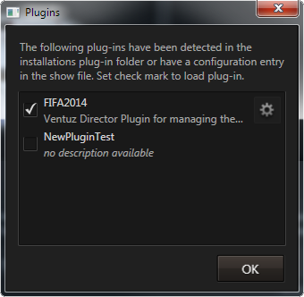
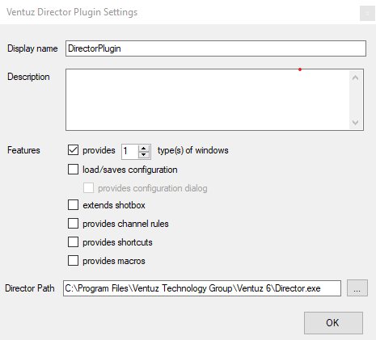
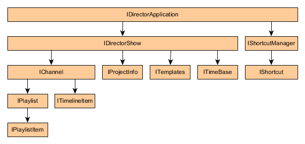
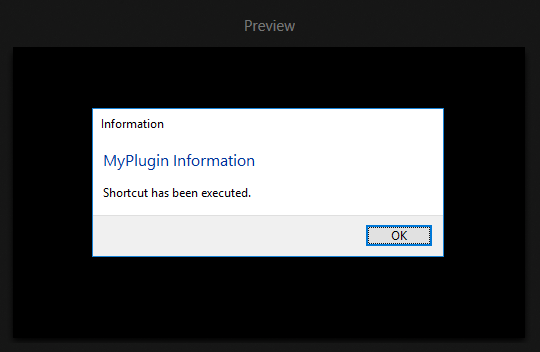
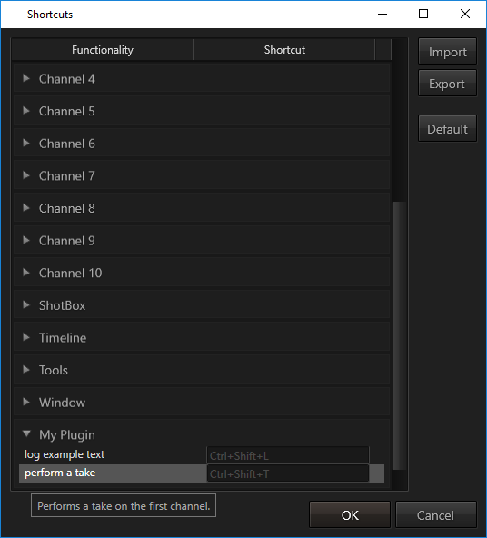
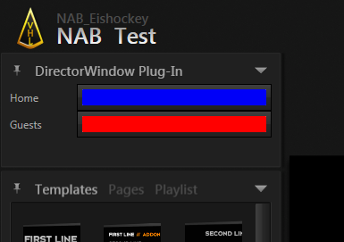
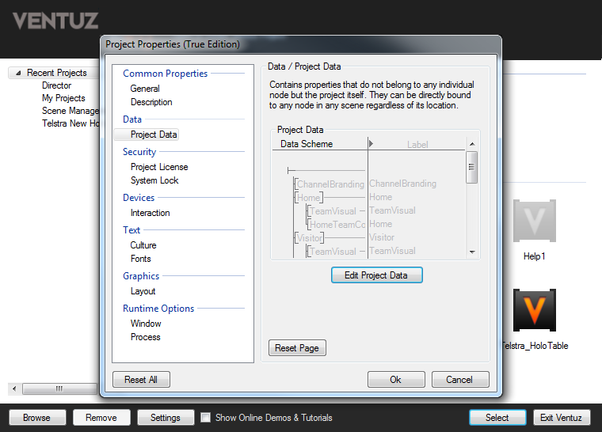

Please note that the PLE Edition of Director does not support plugins!
Plug-Ins are small portions of custom code that can be loaded into and used by Ventuz Director to extend existing functionality. Instead of using some arcane scripting language, the Ventuz development team decided to use the standard Visual Studio tool chain. As a result:
Developing a plug-in requires knowledge of C# or Visual Basic, WPF (Windows Presentation Foundation) as well as the Director Plug-In API. However, for an end user, installing a plug-in is as easy as copying a DLL into the right folder.
To enable a plug-in's functionality, open the show it should be used in and go to the Plug-ins Manager which can be found in the main menu under Show / Plug-Ins .... Set the check mark next to all plug-ins that should automatically be loaded whenever this show is opened.
In the image below, there have been two plug-ins installed but only the first is activated for the show. The button to the right of the name shows that this plug-in can be configured. By pressing it, the plug-in's configuration dialog opens.

The information which plug-ins should be enabled and their respective configuration settings are stored in the Director show file. To use a common set of settings for all shows based on a project, an operator can embed default settings into the Ventuz Project file via Show / Project / Show Defaults... in the main menu. Those will be used as defaults for each show that is newly created for this project.
The main requirements for developing a Director plug-in are:
The Visual Studio Extension file provides a project template for creating Director plug-ins that will automatically setup everything required to build and deploy a plug-in. Inside the Windows Explorer, double-click the vsix file to install the extension. Since most users will not be developing plug-ins, this is not automatically done by the Ventuz installer but has to be done manually. Open Visual Studio and under Tools/Extensions and Updates verify that the extension has correctly been installed.
Visual Studio Extensions are only supported by Visual Studio Professional or higher licenses, not Visual Studio Express! It is possible to develop Director plug-ins without the extension, only the task of setting up the project is then left to be done manually by the user.
A new version of the Ventuz Visual Studio Extension is shipped as part of the Ventuz installation whenever plug-in interfaces are added or changed. Make sure to remove any old versions and re-install the latest version when upgrading your Ventuz installation.
To start a new plug-in, select File/New/Project... from the Visual Studio main menu. If the extension is correctly installed, a new entry Director Plug-In will be available in the Visual C# section and in the Visual Basic section. (This text will choose C# as programming language.) Select this entry, choose a name and location for your plug-in project and press OK. Next, the Ventuz Director Plugin Settings dialog will appear.

Display name and description of a plug-in are end-user information that will be used inside Director, for example in the plug-in manager. They have no relevance for the functionality of the plug-in but make it easier for an end-user to identify and use a plug-in. The set of controls below is for specifying what capabilities the plug-in will support. For this example, create a plug-in that provides one new window type. Finally, to test a plug-in, a Director instance is required. The extension will auto-detect the latest Ventuz installation and use that application path. If for some reason the auto-detection fails or the plug-in should be developed against a specific Director version, the appropriate Director Path can be entered in the first text box.
When pressing OK, Visual Studio will create a skeleton implementation of the plug-in. In our case, it contains the following files:
This is already a fully functional Director plug-in although it does not do anything besides showing an empty control. Before filling it with functionality, we will take a look at debugging a plug-in.
Due to the Visual Studio Extension, debugging a Director plug-in is exactly the same as debugging any other c# program. Just hit F5 to launch the debugger. Behind the scenes, Visual Studio will launch the Director installation specified in the plug in settings dialog and inject the plug-in such that it can be used without copying it into your installation.
Set a breakpoint into the first line of
Initialize(IDirectorApplication application)
in the file Plugin.cs by setting the cursor on that line and pressing F9. Inside Director, either create a new or open an existing show. To activate the plug-in, go to the plug-in manager via Show / Plug-Ins... in the main menu and click on the check box next to the plug-ins name. Visual Studio will come to the front as the breakpoint will be hit. To actually create an instance of the new window type, go to the window manager in the main menu and add a new window. The list of available window types should now contain the plug-in window type.
A Director plug-in is a DLL that contains a class which conforms to the IPlugin interface defined in Director.Shared.dll. When Director tries to allocate a plug-in instance, it calls the Initialize method on that interface. The application parameter of this method contains an instance of the IDirectorApplication interface which is the plug-ins entry point to access Director functionality. Any operation the plug-in wants to perform inside Director is done via this interface.
[Export(typeof(IPlugin))]
[ExportMetadata("Name", "DirectorWindowExample")]
[ExportMetadata("DisplayName", "DirectorWindowExample")]
[ExportMetadata("Description", "Ventuz Director Plugin for a new example window type.")]
public class Plugin : IPlugin
{
private IDirectorApplication _application;
public IDirectorApplication Application
{
get
{
return this._application;
}
}
public IReadOnlyList<PluginWindowDescriptor> SupportedWindowTypes
{
get
{
List<PluginWindowDescriptor> result = new List<PluginWindowDescriptor>();
result.Add(new PluginWindowDescriptor("windowType1", "Type 1", "Type 1 of DirectorWindowExample", typeof(WindowType1)));
return result;
}
}
public void Initialize(IDirectorApplication application)
{
this._application = application;
}
public void Dispose()
{
}
}
For Director to find the plug-in, the class can implement IPlugin or any derived interface. However, it always has to export the IPlugin interface, exporting just a derived interface will not work!
The project template stores a reference to that interface for later usage. Via this interface, various part of Director can be accessed such as the channels in the currently active show.
A plug-in that is configurable can implement IConfigurablePlugin. Director will call the plug-in's SaveConfiguration() method whenever the show is saved and call LoadConfiguration(...) when the show is re-opened. If the plug-in returns a non-null value for ConfigurationDialogContent, a configure button will be shown next to the plug-in entry in the plug-in manager as seen earlier. When it is pressed, a modal dialog will be presented with the content provided by IPluginConfigurationDialog. This allows the plug-in to show a customized configuration dialog and let Director take care of the reset.
public interface IConfigurablePlugin : IPlugin
{
void LoadConfiguration(Dictionary<string, string> configuration);
Dictionary<string, string> SaveConfiguration();
IPluginConfigurationDialog ConfigurationDialogContent { get; }
}
The IChannelRuleProvider interface can be used to add new channel rule conditions and actions to Director. Channel rules are applied when the operator cues new content and used to block certain content or modify its data. A custom written action can for example be used to apply a data base lookup and fill in values whenever a page is cued.
The IShotboxExtender interface is used to add new entries to the Shot Box. When such an item is selected by the operator, the plug-in can either return a URI and have Director use its own resolve mechanisms or return null and perform some custom actions by itself using the IDirectorApplication interface.
The IWindowProvider interface is probably the most commonly used interface. By implementing it, a plug-in can add one or more new window types to the list of available windows in Director.
The older IWindowPlugin interface is now obsolete and will be removed in a future version. It should no longer be used because it can only provide a single type of window and plug-ins of this type are loaded/unloaded every time the window layout changes (which makes managing resources like network ports, files or similar difficult at best).
The IMacro interface is used to declare a custom Director Macro. The Plugin does not need to implement the interface as each macro is represented by another IMacro object. Macros can be instantiated and registered using the IMacroManager available in the IDirectorApplication reference of the plugin.
Thus the Macro API can be used to dynamically declare and register macros based on e.g. incoming data. Another application is to execute macros based on execution of other code in the plugin. Also it is designed to enable additional code execution once a Macro has been executed. A callback routine can be defined with the IMacroManager.Register method. The IMacro parameter that is passed to that function provides additional information about the executed macro.
A major portion of a plug-in is of course the interaction of the plug-in with build-in Director functionality like cueing a template or performing a take. As shown in the previous code example, this is achieved via the IDirectorApplication interface that a plug-in is passed as part of the initialize method signature. IDirectorApplication represents the application as a whole and most importantly gives access to the active show in the form of IDirectorShow. The show in turn gives access to the channels in a show, a collection of IChannel instances. Each of those channels has an IPlaylist member, which contains an arbitrary amount of IPlaylistItem.
Furthermore the IDirectorApplication offers access to an instance of the IShortcutManager interface, which itself allows adding and removing of custom key combinations using the IShortcut interface.
The way the interface hierarchy is build directly reflects Director's internal software architecture and should be familiar to anyone who has used Director, although currently only a subset of functionality is exposed.

As an example for a simple, functional plug-in, let's extend the Director Window Plug-In created above and add two buttons to the window, one for cueing a specific template and one for taking the template.
Director uses Microsoft's Windows Presentation Foundation (WPF) framework to build its user interface. The advantage of using such a standard framework as opposed to a customized scripting language is that there is a great abundance of tutorials, books and other learning material readily available on the net and the resulting large number of developers that are capable of writing WPF applications. For someone only interested in developing Director Plug-Ins though, the shear amount of possibilities can be a bit daunting. However, it's quite easy to achieve first results:
To create the user interface for our plug-in, open WindowType1.xaml and replace the Grid-tags with
<StackPanel>
<Button Content="Cue" Click="Cue"/>
<Button Content="Take" Click="Take"/>
</StackPanel>
Those are two WPF-buttons inside a stackpanel that will align the buttons vertically inside the plug-in window. The Content property specifies what is shown inside the button (i.e. the label) and the Click property associates each button with a method in the UserControl's code behind.
The typical WPF approach to add functionality to a button is by using commands. This is a slightly more complex approach and omitted here in order to keep this example as simple as possible. Commands also manage disabling a button if the command cannot be executed, for example disabling the take button when nothing is cued.
Inside WindowType1.cs, we'll find various method stubs. Since this plug-in does not need to store any window layout settings or perform initialization code, the generated method stubs can be left as is. We'll just add the two methods for our button functionality:
public void Cue(object sender, EventArgs args )
{
}
public void Take(object sender, EventArgs args )
{
}
We will also need access to Director functionality. Add a property to store the value that was passed to the window in the initialization:
Plugin Plugin { get; set; }
public void Initialize(IPlugin plugin)
{
this.Plugin = plugin as Plugin;
}
In order to cue a template, we have to retrieve it from the set of available templates and then tell Director where to cue it. In this example, we'll use the Hockey demo project that ships with Director. It contains a template called NS1L that we want to cue whenever the operator clicks our cue button. As shown in the diagram above, the templates can be accessed by using the active show to get the ITemplates interface.
The quickest way find out what's accessible via the plug-in API is to double-click on the Ventuz.Director.Shared entry under References in the Solution Explorer. This opens the Object Browser window where one can navigate the various interfaces and their methods.
ITemplates implements a method that retrieves a template by its name (the internal name the author of the template gave the template state which may or may not differ from the end-user name shown in Director). To retrieve the template called "NS1L", we go through the plugin interface as follows:
Ventuz.Remoting4.Templates.Template template = this.Plugin.Application.Show.Templates.GetTemplate("NS1L");
Once we have the Template, we have to create an instance of that template and the corresponding data. This is done with the DirectorTemplateData class. Besides the template itself, it also contains a Data object. This is a special kind of object called a Dynamic Object as its Properties are generated only the fly during program execution. For example, to set the template parameter FirstLine, one simply writes:
DirectorTemplateData templateData = new DirectorTemplateData(template); templateData.Data.FirstLine = "Test";
Visual Studio will not know at compile time whether or not the dynamic object actually has such a member as for that it would have to analyze the template. When accessing a member which is not part of the Template's DataModel, an exception will occur which might even crash the whole application! Make sure to use try/catch-blocks and watch out for unexpected exceptions.
Now that the template instance is ready, we have to cue it to a channel. Again, we access the channel via the active show. In this example, we'll hard code to always use the first channel. The respective call is
this.Plugin.Application.Show.Channels[0].CueAsync(templateData);
One could also implement the window using IPluginWindow<IChannel> to make this window a channel-based window. In that case, Director would allow the end-user to configure the channel the window should use via its window configuration manager. The window implementation could then use DirectorDataContext to access the configured channel.
Implementing the take button is even simpler. Again we go via the IPlugin interface from the application level down to the channel and then tell it to do a take.
this.Plugin.Application.Show.Channels[0].TakeAsync();
Similar to CueAsync, the IChannel interface also contains the method UncueAsync which can be used to remove parts or the whole TemplateData from the currently cued item.
If a template can use an image, movie or similar asset, the asset itself is not stored inside DirectorTemplateData. Instead, the template instance will only store a URI to reduce overhead when sending the template instance to remote machines during cueing. This becomes obvious when cueing a movie which happens almost instantaneously as the movie file itself is already present on the remote machine.
Director uses a set of pre-defined URI schemes that the Ventuz runtime will also understand. The most important ones in the context of plug-in development are:
| Schema | Description |
|---|---|
| ventuz:// | A relative path that starts at the root of the Ventuz project folder structure. |
| assets:// | A relative path that starts at the asset folder within the Ventuz project folder structure. |
As an example, the A.Hilton.png headshot image from the Hockey demo project can be accessed by either ventuz://assets/headshots/A.Hilton.png or assets://headshots/A.Hilton.png. So if a template contains the template parameter Image, it would be set by the following code:
DirectorTemplateData templateData = new DirectorTemplateData(template);
templateData.Data.Image= new Uri("assets://headshots/A.Hilton.png");
The plug-in API offers access to the IShortcutManager and IShortcut interfaces which allow creating, adding and removing of custom shortcuts. These shortcuts provide a convenient way to execute often needed plugin functionality in a fast way.
A new shortcut is added within a few steps. First we add some members to the plug-in class to store needed data. This will be the instance of the IShortcut itself which has to be removed at the end to "free" the used key combination. We also declare a RoutedUICommand to be able to associate a shortcut with an event to execute each time the shortcut gets triggered.
// internal reference to the shortcut which has to get unregistered at end
private IShortcut _shortcut;
// read only access to the shortcut command.
public static RoutedUICommand ShortcutCommand { get { return _shortcutCommand; } }
// internal reference to the shortcut command
private static RoutedUICommand _shortcutCommand = new RoutedUICommand("The command to execute for the registered shortcut", "shortcutCommandName", typeof(Plugin));
Then we add the Execute event handler for the command. For this example we only display a popup message about successful execution of the shortcut.
When the plugin instance has been passed as parameter, every plugin functionality will be available from inside the handler.
private static void ShortcutExecuted(object sender, ExecutedRoutedEventArgs e)
{
e.Handled = true;
// cast parameter back to an object of the type we have passed (Plugin)
Plugin self = e.Parameter as Plugin;
if ( self != null )
{
// log a message and display it as a popup
self.Application.LogInfo("Shortcut has been executed.", true);
}
}
As we now have everything prepared we can add a new method that contains the initialization itself. First the command gets registered, together with its associated Executed event handler, wrapped in a Commandbinding. Then we create a shortcut using the ShortcutManager and pass the desired keys combination the shortcut should react on and an unique string, best prefixed with the plugin name. Afterwards the ShortcutManager is used again to make sure the key combination is not already in use. If this is not the case the shortcut is added to the shortcut system, together with the previously registered command, a command parameter (preferable this) and some strings which are used for the shortcut window, where each shortcut is listed.
private void InitShortcuts()
{
this.Application.ShortcutManager.RegisterCommand(new CommandBinding(ShortcutCommand, ShortcutExecuted));
this._shortcut = this.Application.ShortcutManager.CreateShortcut(ModifierKeys.Control | ModifierKeys.Shift, Key.L, "myPlugin.logdemo");
if ( !this.Application.ShortcutManager.ShortcutExists(this._shortcut) )
{
this.Application.ShortcutManager.AddShortcut(this._shortcut, ShortcutCommand, this, "My Plugin", "log example text", "Add an entry to the log message.");
}
}
Finally we put a call to the above method into the plug-in Initialize method to make sure everything is ready right from the start.
public void Initialize(IDirectorApplication application)
{
// [...]
// setup shortcuts
InitShortcuts();
}
As shortcuts will be added for the whole lifetime of the Director application we have to ensure that the shortcuts gets removed properly. Otherwise closing the active show and re-opening it would cause the shortcut to be still in use associated with a former instance of the shortcut command. Therefore we define a new method for cleanup and call it during Dispose.
private void DeinitShortcuts()
{
if ( this._shortcut != null )
{
this.Application.ShortcutManager.RemoveShortcut(this._shortcut);
this._shortcut = null;
}
}
public void Dispose()
{
// unregister all shortcuts
this.DeinitShortcuts();
}
Now the shortcut is ready to use. Once the plug-in has been enabled the Director reacts on the specified key combination and the associated command gets executed. The shortcut overview window will contain also all custom shortcuts for reference.


A single command and its event handler can be used for an arbitrary amount of shortcuts. The logic for each shortcut can be controlled via the Parameter property of the ExecutedRoutedEventArgs. Instead of only passing the plug-in instance to the AddShortcut call, we provide a more advanced object. This could be for example a tuple consisting of the plug-in instance and a string.
// register the command, only 1 is needed this.Application.ShortcutManager.RegisterCommand(new CommandBinding(ShortcutCommand, ShortcutExecuted)); // add two different shortcuts using the same command, but different string values inside the tuple parameter this.Application.ShortcutManager.AddShortcut(this._shortcutLog, ShortcutCommand, new Tuple<Plugin, string>(this, "log"), "My Plugin", "log example text", "Add an entry to the log message."); this.Application.ShortcutManager.AddShortcut(this._shortcutTake, ShortcutCommand, new Tuple<Plugin, string>(this, "take"), "My Plugin", "perform a take", "Performs a take on the first channel.");
In the Executed event handler we only need to recreate the tuple from the parameter and perform a switch/case on the string part.
static private void ShortcutExecuted(object sender, ExecutedRoutedEventArgs e)
{
e.Handled = true;
var tuple = e.Parameter as Tuple<Plugin, string>;
if ( tuple == null )
return;
var self = tuple.Item1;
var param = tuple.Item2;
switch (param)
{
case "log":
// log a message and dispay it as a popup
self.Application.LogInfo("Shortcut has been executed.", true);
break;
case "take":
// perform take on first channel, if available
if ( self.Application.Show.Channels.Count > 0 )
self.Application.Show.Channels[0].TakeAsync();
break;
}
}
The IPlaylist and the IPlaylistItem interfaces provide the possibility to interact with a playlist of a channel. The following code snippets demonstrate how items can be added, removed or changed. Usually each example assumes that at least 1 channel exists.
This example shows how to add an arbitrary amount of images to the playlist. The Assets folder of the project gets filtered by a predefined list of file extension. Each matching file gets added directly to the playlist, leaving the content handling up to the Director.
/// <summary>
/// Adds images from the Assets project folder to the playlist of the specified channel.
/// </summary>
/// <param name="channelIndex">the index of the channel</param>
public void AddImages(int channelIndex = 0)
{
// check index
if ( channelIndex < 0 || channelIndex >= this.Application.Show.Channels.Count )
return;
// path to this project
var path = this.Application.Show.ProjectPath;
FileInfo project = new FileInfo(path);
// path to the Assets directory of the project
var assetsDir = new DirectoryInfo(Path.Combine(project.DirectoryName, "Assets"));
if ( !assetsDir.Exists )
return;
// list of some image file extensions we are interested in
string[] extensions = new string[] { ".jpg", ".jpeg", ".bmp", ".png", ".dds" };
// use 5 seconds like for a small slideshow
var duration = this.Application.Show.TimeBase.DurationFromSeconds(5);
// filter files in Assets folder for desired file type
var imageInfos = assetsDir.EnumerateFiles().Where(file => extensions.Any(ext => ext == file.Extension)).ToArray();
// add each image of the resulting list to the playlist
foreach ( var imageInfo in imageInfos )
{
// create new item with uri of image file, default name (i.e. filename) and the duration
var item = this.Application.Show.Channels[channelIndex].Playlist.CreateItem(new Uri("assets://" + imageInfo.Name), null, duration);
this.Application.Show.Channels[channelIndex].Playlist.Add(item);
}
}
It is also possible to create new items based on existing templates. Simply retrieve a list of available templates from the show and add a new playlist item based on the URI of the template. We also change the default name of the new playlist item by prefixing it. This way we can see which items have been added using this method.
/// <summary>
/// Adds all available templates to the playlist of the first channel.
/// </summary>
public void AddTemplates()
{
var playlist = this.Application.Show.Channels[0].Playlist;
foreach ( var template in this.Application.Show.Templates.GetTemplates() )
{
playlist.Add(
playlist.CreateItem(
template.AbsoluteUri, "Template: " + template.DisplayName));
}
}
Sorting is also quite easy. The following snippet shows how a playlist can be sorted by duration. Playlist items with the same duration get sorted by their name.
/// <summary>
/// Sorts the playlist of the first channel by duration and name.
/// </summary>
public void SortByDurationAndName()
{
var playlist = this.Application.Show.Channels[0].Playlist;
var list = playlist.ToList();
// sort by duration, then by name
list.Sort((a, b) =>
{
if ( a == b )
return 0;
if ( a == null || b == null )
return -1;
int result = (int)(a.Duration - b.Duration);
if ( result == 0 )
result = string.Compare(a.DisplayName, b.DisplayName);
return result;
});
// remove all items and re-add in sorted order
playlist.Clear();
foreach ( var item in list )
playlist.Add(item);
}
The next example is similiar to the previous one, but uses a custom IComparer for sorting two instances of IPlaylistItem and the Keywords property of the underlying template instead of the duration. The keywords of both items are tested first. If they match or are both missing, the name of the items is used for comparison.
/// <summary>
/// Sorts the playlist by Keywords and DisplayName.
/// </summary>
public void SortByKeywordAndName()
{
var playlist = this.Application.Show.Channels[0].Playlist;
var list = playlist.ToList();
list.Sort(new PlaylistItemKeywordComparer());
// remove all items and re-add in sorted order
playlist.Clear();
foreach ( var item in list )
playlist.Add(item);
}
/// <summary>
/// Compares two instances of IPlaylistItem by their Keywords and DisplayName property.
/// </summary>
class PlaylistItemKeywordComparer : IComparer<IPlaylistItem>
{
public int Compare(IPlaylistItem x, IPlaylistItem y)
{
if ( x == y )
return 0;
if ( x == null || y == null )
return -1;
bool useName = false;
// determine whether these playlist items have keywords
var xHasKeywords = x.ContentData?.Template?.Keywords != null;
var yHasKeywords = y.ContentData?.Template?.Keywords != null;
// no keywords, use name
if ( !xHasKeywords && !yHasKeywords )
{
useName = true;
}
else
{
if ( !xHasKeywords )
return -1;
if ( !yHasKeywords )
return 1;
}
int result = 0;
if ( !useName )
{
// both items have keywords, compare them as string
string a = string.Join(", ", x.ContentData.Template.Keywords);
string b = string.Join(", ", y.ContentData.Template.Keywords);
result = string.Compare(a, b);
// fallback to name if equal
useName = result == 0;
}
if ( useName )
result = string.Compare(x.DisplayName, y.DisplayName);
return result;
}
}
Removing items from the playlist is very simple. The following few lines of code show how you can remove all items, only a single item or a custom collection of items.
// playlist of first channel for convenience (assuming channel is available)
var playlist = this.Application.Show.Channels[0].Playlist;
// remove all items from the playlist
playlist.Clear();
// remove only 3rd item
playlist.Remove(playlist[2]);
// remove all selected items
var selected = playlist.Where(x => x.IsSelected).ToArray();
foreach ( var item in selected )
playlist.Remove(item);
It is possible to retrieve the duration of a playlist item as well as to change it. For this it provides a property called Duration containing the amount of ticks which determines how long a particular item will be on air. The default is 60 ticks per second, which cannot be changed. The ITimeBase interface, accessible from the Show, provides some helper functions to convert ticks to seconds and vice-versa.
The fist example iterates over the playlist and adds the ticks together. Then the TimeBase object of the show is used to convert these into seconds.
public double GetTotalDurationInSeconds()
{
long duration = 0;
for ( int i = 0; i < this.Application.Show.Channels[0].Playlist.Count; ++i )
duration += this.Application.Show.Channels[0].Playlist[i].Duration;
return this.Application.Show.TimeBase.SecondsFromDuration(duration);
}
The second example uses the TimeBase object the other way round and creates a duration value in ticks from a specified seconds value. Then this value gets applied to all playlist items.
public void SetDurationFromSeconds(double seconds)
{
long duration = this.Application.Show.TimeBase.DurationFromSeconds(seconds);
for ( int i = 0; i < this.Application.Show.Channels[0].Playlist.Count; ++i )
{
this.Application.Show.Channels[0].Playlist[i].Duration = duration;
}
}
Director is a multi-threaded application that places great emphasis on the fact that the application and its user interface should always be responsive, no matter what functionality is executed. But what happens when the user clicks one of the buttons in the plug-in? The main WPF UI thread processes the click and calls the plug-in method, preventing any UI updates until that method is done. This can easily freeze the user interface for a couple of seconds depending on how much work is done inside the method.
To prevent this, Director internally makes heavy use of C# Task objects and the Async framework. The latter allows the compiler to split a method into multiple parts and at certain points of the execution return to the caller (i.e. let the UI do other work) and resume at the same position later on.
Any method that wants to use that mechanism has to have the async keyword in its declaration. As a convention, one usually adds the suffix Async to the method name to visualize to the caller that this method may return prematurely. To prevent the user from clicking the button again once its operation has started, it is also a good idea to disable it.
public async void CueAsync(object sender, EventArgs args )
{
this.IsEnabled = false;
...
this.IsEnabled = true;
}
public async void TakeAsync(object sender, EventArgs args )
{
this.IsEnabled = false;
...
this.IsEnabled = true;
}
Just adding the async does not change the methods' behavior yet. The compiler needs to be told at what point it can safely jump out of the method with the await keyword. An await can be done on any Task object and the majority of potentially long running methods exposed in the Director SDK return a Task object. We want to await on the cueing and the taking as those will be the most time-consuming operations.
So the final implementation looks like this:
public async void CueAsync(object sender, EventArgs args )
{
this.IsEnabled = false;
Template template = plugin.Application.Show.Templates.GetTemplate("NS1L");
DirectorTemplateData templateData = new DirectorTemplateData(template);
templateData.Data.FirstLine = "Test";
ITimelineItem timelineItem;
try
{
timelineItem = await plugin.Application.Show.Channels[0].CueAsync(templateData);
}
finally
{
this.IsEnabled = true;
}
}
public async void TakeAsync(object sender, EventArgs args)
{
this.IsEnabled = false;
try
{
await plugin.Application.Show.Channels[0].TakeAsync();
}
finally
{
this.IsEnabled = true;
}
}
For the cue, retrieving the template and creating the template data should be reasonably fast so we do that before awaiting. Once the cueing is done and we have been returned the ITimelineItem instance, we might use it to present some further information to the user but that has been omitted for brevity. Finally, we re-enable the button. For the take, the plug-in control is disabled, the task is performed asynchronously and once it has finished, the control is re-enabled.
Another common use case is developing a custom control panel that should modify project data (e.g. goals scored in a match). We'll use this to give an example on how to create WPF binding between a UI element and its respective data object. Let's assume we have a color each for the home and guests team that is part of the project data. How do we achieve something like shown in the following screenshot?

This example contains a number of standard WPF mechanisms like bindings, resources, converters, and using components from other DLLs. It is beyond the scope of this document to give the reader even a concise overview over WPF functionality and therefore this is only intended as something to follow through while using some other form to learn WPF!
Lets add a second window type to our plug-in. In the Visual Studio Solution Explorer, right-click and add a new WPF UserControl called ProjectDataWindow. In Plugin.cs, add another line in SupportedWindowTypes for the new window type:
public IReadOnlyList<PluginWindowDescriptor> SupportedWindowTypes
{
get
{
List<PluginWindowDescriptor> result = new List<PluginWindowDescriptor>();
result.Add(new PluginWindowDescriptor("windowType1", "Type 1", "Type 1 of DirectorWindowExample", typeof(WindowType1)));
result.Add(new PluginWindowDescriptor("projectData", "Project data Window", "Access team colors", typeof(ProjectDataWindow)));
return result;
}
}
In ProjectDataWindow.xaml.cs, have the class implement the interface IPluginWindow:
using System.Collections.Generic;
using System.Windows.Controls;
using Ventuz.Director.Shared;
namespace DirectorWindowExample
{
/// <summary>
/// Interaction logic for ProjectData.xaml
/// </summary>
public partial class ProjectDataWindow : UserControl, IPluginWindow
{
public ProjectDataWindow()
{
InitializeComponent();
}
public System.Windows.FrameworkElement PopupContent
{
get
{
return null;
}
}
public System.Windows.FrameworkElement WindowContent
{
get
{
return this;
}
}
public void Dispose()
{
}
public void Initialize(IPlugin plugin)
{
// Setup our plug-in as data source for WPF bindings.
this.DataContext = plugin;
}
public void LoadLayoutSettings(Dictionary<string, string> settings)
{
}
public Dictionary<string, string> SaveLayoutSettings()
{
return null;
}
}
}
The plug-in now provides two window types, the window containing the cue/take buttons and another that we will implement in the following. No code behind functionality will be needed as an alternative mechanism will be used to connect the user interface to the actual values: WPF bindings. For the following to work, we have to set the WPF control's DataContext to our plug-in which is done during initialization.
Inside ProjectDataWindow.xaml, add:
The row and column definitions of the grid either specify a fixed height/wide (i.e. 75), auto (take exactly as much space as the content in that cell needs) or * (take as much space as possible). Each of the controls inside the Grid use the Grid.Row and Grid.Column Attached Properties to specify what goes into which cell of the Grid.
However, WPF does not come with a pre-build color picker, so we are going to use the exact same one as used in Director!
<UserControl x:Class="DirectorWindowExample.ProjectDataWindow"
xmlns="http://schemas.microsoft.com/winfx/2006/xaml/presentation"
xmlns:x="http://schemas.microsoft.com/winfx/2006/xaml"
xmlns:mc="http://schemas.openxmlformats.org/markup-compatibility/2006"
xmlns:d="http://schemas.microsoft.com/expression/blend/2008"
xmlns:ventuzControls="clr-namespace:Ventuz.WPF.Controls;assembly=Ventuz.WPF"
mc:Ignorable="d"
d:DesignHeight="300" d:DesignWidth="300">
<Grid>
<Grid.RowDefinitions>
<RowDefinition Height="Auto"/>
<RowDefinition Height="Auto"/>
</Grid.RowDefinitions>
<Grid.ColumnDefinitions>
<ColumnDefinition Width="75"/>
<ColumnDefinition Width="*"/>
</Grid.ColumnDefinitions>
<TextBlock Grid.Row="0" Grid.Column="0" Text="Home" VerticalAlignment="Center"/>
<ventuzControls:ColorPicker Grid.Row="0" Grid.Column="1" Height="30"/>
<TextBlock Grid.Row="1" Grid.Column="0" Text="Guests" VerticalAlignment="Center"/>
<ventuzControls:ColorPicker Grid.Row="1" Grid.Column="1" Height="30"/>
</Grid>
</UserControl>
For this to work, we added a reference to the Ventuz.WPF.dll to the project by right-clicking on the References entry in the project's Solution Explorer (the DLL is part of your Director installation, just browse for it). Then we added an XML namespace so we can access the controls in the XAML.
xmlns:ventuzControls="clr-namespace:Ventuz.WPF.Controls;assembly=Ventuz.WPF"
Now we have two color pickers, but they do not do anything yet. We need to connect the value of the ColorPicker with the project data. First, we open Ventuz Designer and right-click on the icon for our project and choose Properties / Data / Project Data Edit / Project Data and look for where the colors are. In this case, their path is Home/HomeTeamColor and Visitor/VisitorTeamColor respectively.

We close the Ventuz Designer and continue inside Visual Studio. By double-clicking on the Ventuz.WPF reference in the Solution Explorer, the Object Browser opens up and we can see that the ColorPicker has a property named DisplayColor. To connect those two ends, we add a WPF Binding:
<ventuzControls:ColorPicker Grid.Row="0" Grid.Column="1" Height="30" DisplayColor="{Binding Application.Show.ProjectData.Data.Home.HomeTeamColor}"/>
<ventuzControls:ColorPicker Grid.Row="1" Grid.Column="1" Height="30" DisplayColor="{Binding Application.Show.ProjectData.Data.Visitor.VisitorTeamColor}"/>
For a binding to work, the DataContext of the control needs to be set properly and from there the path specified in the binding should lead to the desired property. By checking the code behind, we see that the DataContext is set to our plugin interface and from there we can again drill down to the property we want.
Unfortunately, this still does not work. When launching the debugger and opening our plug-in, the Output window will print the following lines:
System.Windows.Data Error: 1 : Cannot create default converter to perform 'two-way' conversions between types 'System.Drawing.Color' and 'System.Nullable`1[System.Windows.Media.Color]'. Consider using Converter property of Binding. BindingExpression:Path=Application.Show.ProjectData.Data.Home.HomeTeamColor; DataItem='Plugin' (HashCode=50714607); target element is 'ColorPicker' (Name=''); target property is 'DisplayColor' (type 'Nullable`1') System.Windows.Data Error: 5 : Value produced by BindingExpression is not valid for target property.; Value='Color [A=255, R=25, G=25, B=254]' BindingExpression:Path=Application.Show.ProjectData.Data.Home.HomeTeamColor; DataItem='Plugin' (HashCode=50714607); target element is 'ColorPicker' (Name=''); target property is 'DisplayColor' (type 'Nullable`1')
In plain English, both ends don't match! We need a converter for this which luckily is also part of Ventuz.WPF.dll. We add another namespace:
xmlns:ventuzConverters="clr-namespace:Ventuz.WPF.Converters;assembly=Ventuz.WPF"
Then we add an instance of the RGBAToColorConverter as part of our UserControl's resources (usually added as the first thing right after the end of the opening UserControl tag).
<UserControl.Resources>
<ventuzConverters:RGBAToColorConverter x:Key="colorConverter"/>
</UserControl.Resources>
And finally, we use the converter in our bindings:
<ventuzControls:ColorPicker Grid.Row="0" Grid.Column="1" Height="30" DisplayColor="{Binding Application.Show.ProjectData.Data.Home.HomeTeamColor, Converter={StaticResource colorConverter}}"/>
<ventuzControls:ColorPicker Grid.Row="1" Grid.Column="1" Height="30" DisplayColor="{Binding Application.Show.ProjectData.Data.Visitor.VisitorTeamColor, Converter={StaticResource colorConverter}}"/>
Now everything works as expected. When the plug-in window is opened, the color pickers will contain the current color set in the project data and when making any changes, they are reflected inside the presenter runtime.
Installing a plug-in on a end-user machine is fairly straight forward. In the Ventuz installation directory, create a folder called Plugins. Copy the DLL output of the Visual Studio Director Plug-In project into that folder and restart Director. That's it!